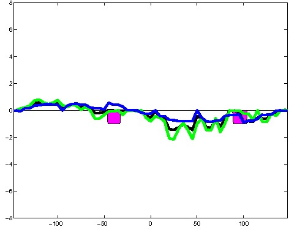

K562 Repressive DNase matched - State 24:Quies (n=5)
K562 Repressive DNase matched - State 24:Quies (n=5)
[
See group descriptions
]

; picked in K562 (state 24:Quies, DNase); matched; chr8:70,602,269-70,602,563 (295bp)")
; picked in K562 (state 24:Quies, DNase); matched; chr19:38,327,249-38,327,543 (295bp)")